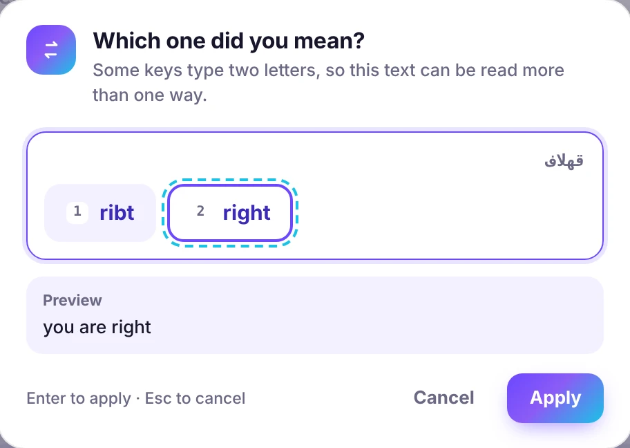
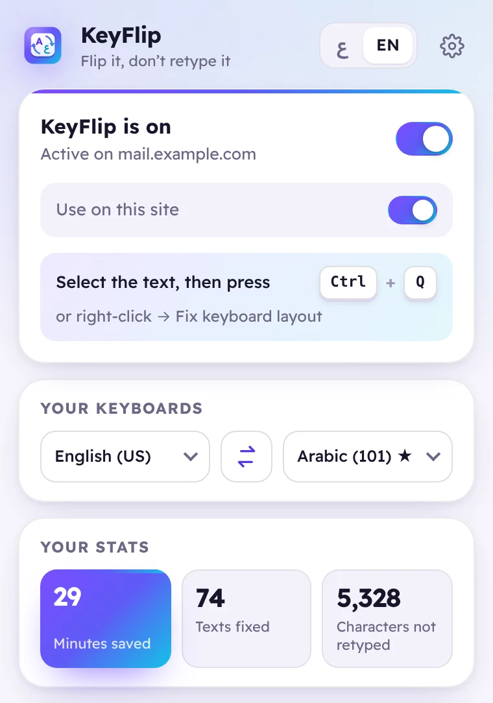

Ctrl+Q
1
Keyboard shortcut
Select the text and press Ctrl+Q. Nothing selected? KeyFlip fixes the whole text box.
On a Mac it’s ⌃ Control + Q — because ⌘ Q quits the browser.
Free browser extension
Select the gibberish and press Ctrl+Q. KeyFlip rewrites it with the right keyboard, right where you typed it — no deleting, no retyping.
Works in Chrome, Edge, Brave and Opera
Three ways to flip
Select the text and press Ctrl+Q. Nothing selected? KeyFlip fixes the whole text box.
On a Mac it’s ⌃ Control + Q — because ⌘ Q quits the browser.
;dt phg;
FlipEN → عSelect text that looks wrong and a small button appears with a preview of the fix. One click and it’s done.
Prefer the mouse? Right-click the text and choose Fix keyboard layout.
Try it right here
Type or paste text written with the wrong keyboard, then press Ctrl+Q or Flip. This is the same engine as the extension, running on your device.
Tip: select part of the text to flip only that part.
Smart, not just fast
On the Arabic keyboard, لا has its own key (B) — but you can also type it as ل then ا (G H). So “قهلاف” could be ribt or right. KeyFlip checks a word list and picks the real word. When it can’t be sure, it asks — with a live preview.

Windows or Mac
The Arabic layout on a Mac doesn’t match Windows: many letters sit on different keys. KeyFlip detects your system and picks the right keyboard. Not sure which one you use? Press a single key in the setup and it finds out.
Same keys, different letters
One click away
Turn KeyFlip on or off, pause it on a site, swap keyboards and see how much time it saved you.

Everything you need
Every fix goes into the normal undo history. Ctrl+Z brings the original back.
Text boxes, search bars, chats, email, rich editors and embedded frames.
Windows and Mac versions of Arabic, Persian, Urdu, Hebrew, French, German, Russian, Turkish and English.
Change the shortcut, hide the floating button or remove the right-click entry.
Press the shortcut again and the text switches back.
Got a message in gibberish? Select it and KeyFlip shows it decoded in a card.
A true right-to-left design, with light and dark themes.
Your text never leaves your device. No servers, no account, no tracking.
15-second tour
Keyboards
USUK
Windows (101)MacMac QWERTY
WindowsMac
Windows
WindowsMac
AZERTY · WindowsAZERTY · Mac
QWERTZ · WindowsQWERTZ · Mac
WindowsMac
Q
Privacy
KeyFlip runs entirely inside your browser. It reads text only when you ask it to fix something, converts it in memory and forgets it.
Get KeyFlip
Want it today? Install the early-access version in under a minute:
chrome://extensions (in Edge: edge://extensions).Chrome · Edge · Brave · Opera — on Windows, Mac, Linux and ChromeOS
Questions
Yes. Completely free, with no ads and no paid version.
No. The conversion happens on your device and nothing is sent anywhere. KeyFlip makes no network requests at all.
That’s how browsers describe any extension that can fix text inside the pages you type in. KeyFlip uses it only when you press the shortcut, click the floating button or use the right-click menu.
⌃ Control + Q, not ⌘ Command + Q — that one quits the browser. You can change the shortcut in the settings.
Chrome, Microsoft Edge, Brave and Opera, on Windows, Mac, Linux and ChromeOS.
Browsers don’t let any extension change their own pages (settings, extension stores, the new-tab page) or the built-in PDF viewer. On those pages the right-click menu opens KeyFlip with the fixed text, ready to copy. Editors that draw text as an image instead of real text boxes can’t be changed either.
Yes. Select it on the page and press the shortcut; KeyFlip shows it decoded in a small card.
No. KeyFlip is an extension for desktop browsers.
Your next wrong-keyboard sentence is one shortcut away from right.